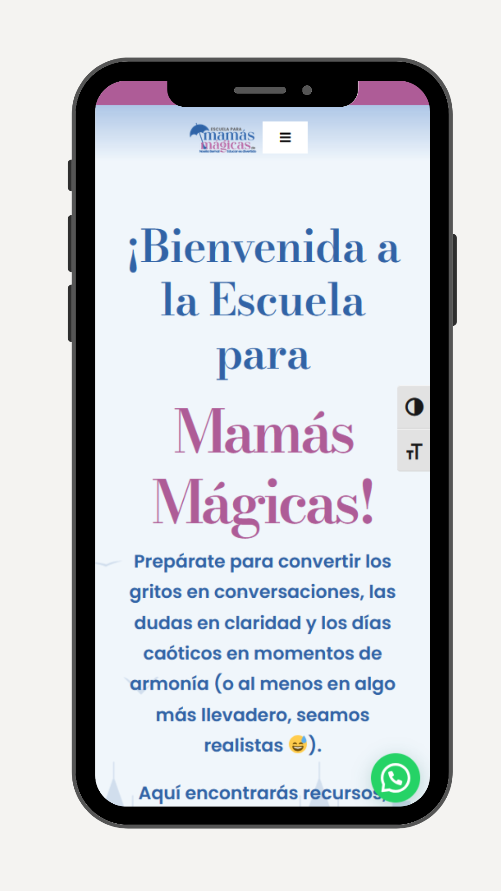

Web mamás mágicas
Web corporativa desarrollada durante mis prácticas en Waricreative...
Ver proyectoDiseñador web & programador.
Combino diseño intuitivo con código limpio para crear experiencias web funcionales y visualmente impactantes.
Soy un diseñador web y programador apasionado por crear experiencias digitales modernas, funcionales y estéticamente impactantes. Me especializo en el desarrollo de interfaces limpias y eficientes, combinando creatividad con código para dar vida a ideas únicas.
Tengo experiencia trabajando con HTML, CSS, JavaScript y frameworks modernos. Me gusta mantenerme actualizado con las últimas tendencias en diseño UI/UX y tecnologías web. Siempre busco soluciones que sean tanto visualmente atractivas como técnicamente sólidas.
Actualmente estoy construyendo mi portfolio y trabajando en varios proyectos personales. Si tienes una idea, un proyecto o simplemente quieres charlar sobre diseño y desarrollo, estaré encantado de conectar contigo.
Web corporativa desarrollada durante mis prácticas en Waricreative...
Ver proyectoEstoy desarrollando una web con wordpress para mi futuro proyecto...
Fecha estimada: 25-07-2025
Estoy desarrollando una plataforma de noticias y blogs sobre el mundo del cine...
Fecha estimada: 25-11-2025
Diseñador web y gráfico en prácticas
Consultor Odoo y Dpto. Software
Teleoperador
Desarrollador Backend
Prácticas de consultor Odoo
Prácticas de Mantenimiento SI
Prácticas de técnico informático
Soy una persona proactiva, organizada y con muchas ganas de seguir creciendo en el mundo del desarrollo web y software...
Puedes descargar mi CV actualizado en formato PDF desde aquí:
Descargar CVCorreo: balseradesign@gmail.com
Teléfono: +34 690 99 50 89